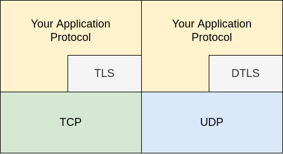

1. Intro¶
This is the repository of the documentation of the project. The following information is an intro about the project:
Sec Lope de Vega or just Lope, is an open source project licensed under the Mozilla Public License v2 . The origin of this was to be as a learning playground for Python, Golang, ZeroMQ and some crypto capabilities. However, this software is transformed into a project since it can be potentially interesting and useful to the community. As far as what this software does, it tries to be a ‘Network Application Interactor’ (NAI?): it interacts with applications, based on a set of rules (‘conversation rules’) using network protocols. To do so, this software is able to work with tcp or udp connections in the two typical modes:
Client mode (Lope connects to other systems or applications)
Server mode (other systems or applications connect to Lope)
The conversation rules are not fixed, and they are fully configurable by the operator of the software (you). In that sense, this is the main capability of this software: To provide complete flexibility in defining how the interaction should be via some ‘configuration files’, and optionally, adding some custom code if needed. Since this software works at tcp or udp level, it tries to be as much as agnostic possible for the application protocol.
This means that this software does not provide directly application level protocols, so it is up to the operator to implement them (or using an existing one). Lope is just a kind of ‘framework’ to allow to define interactions in different application protocols, leaving the implementation as part of the definition of the interaction. Additionally, TLS and DTLS are supported to some extent, so you may define the interaction on top of those protocols. In the following image you can see the protocol layer capabilities of Lope:
{kind=link}
This capability of defining your own interaction in the application protocol you wish (if possible) is the main reason for the name of this project. Lope de Vega was a famous Spanish writer in the Spanish Golden Age, who was quite prolific in his work. Therefore, this software enables you to create many ‘interactions’, potentially making you as ‘prolific’ as possible thanks to the customization capabilities of this software. The term ‘Sec’ is a kind of play on words using the idea of ‘Sir’ (he was indeed a knight of the Order of Malta), and focusing on the potential use of this software for security reasons:
In client mode, Lope can do some security tests when he connects to other systems in an interactive approach (not sure if we can call this IAST, and potentially some web crawling/scraping activities. Since you can define how many client connections to establish, it might be useful to try to do some DDoS testing.
In server mode, Lope can work as a kind of honeypot (or a set of them, this is explained in other sections). It also can work to do some dynamic testing on client software via the answers provided from the server.
However, this software may be useful for other kind of tests that are not only security related, such as mocking-up other systems (as a client or as a server), potentially emulating user activity, as well as for doing load and stress testing. In any case, just remember that this software requires you to define the interaction, so it is not ‘plug and play’: there is still work to do to cover your needs (except you have the right interaction files - conversation rules files). You can think of this like a gun and its bullets: Lope is the ‘gun’, but the conversation rules are the ‘bullets’.
Regarding rules, there four three main types of conversation rules that Lope can execute:
Basic Rules: These rules are executed in specific situations and with a limited set of options (for instance, at the time of the first interaction, or the time-out event).
Synchronous Rules (or sync rules): These rules as executed when a new message is received in the connection with the third party system. Using regular expressions (RegEx) , Lope is able to detect what rule or rules are applicable, and then, execute them.
Asynchronous Rules (or async rules): These rules are executed if a previous rule triggers them, so any synchronous or asynchronous rule can trigger one or several asynchronous rules.
Hybrid Rules: These rules are syncrhonous and asynchronous at the same time. They are triggered via a regular expression that is applicable, or asyncrhonously from another rule.
As far as the architecture is respective, this software is made up of two components:
The External Connectors: These elements are those that interact directly with the target system, they get the ‘conversation rules’ from the engine, and they inform it about any interaction they do. There can be several of external connectors working at the same time, working with one engine. This software is coded in Python and the code can be found in this repository.
The Engine: This is the element that work as orchestrator and the ‘heart’ of the Lope. This controls the operation, sends the corresponding ‘conversation rules’ to the external connectors, and receives all activities generated by the external connectors. This software is coded in Go and the code can be found here.
Note
Please, consider this project as somewhere in between an alpha and beta version since some capabilities (mainly the integration with other systems for sending alerts, support of TLS, and ipv6 support) have not been fully tested and may not work.